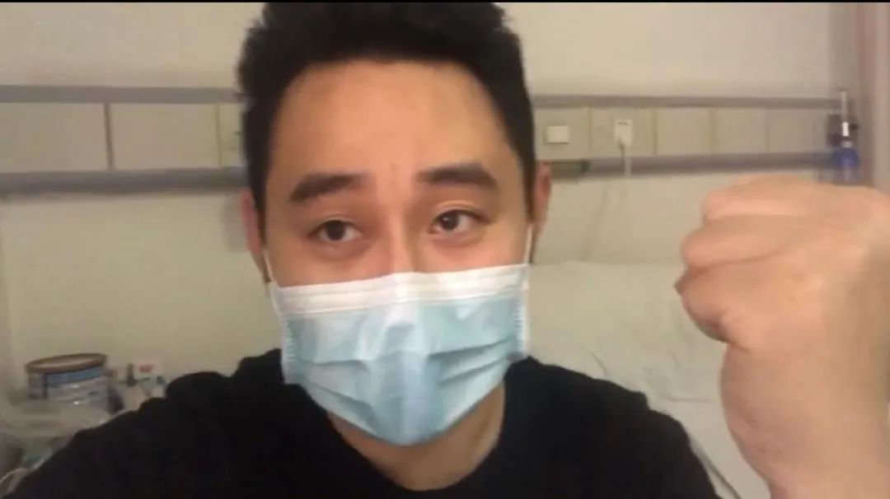

武汉·重症区六层（2）：「我来看你一眼」
原文链接 备份链接 第二集：久别 武汉新冠肺炎最为猛烈时，一支来自南京的医疗队进驻武汉同济医院，开始了一场艰难的战役。与此同时，本刊编辑陈玮曦带着摄影机走进重症病房，记录下了医生和病患并肩作战的日日夜夜。 《时尚先生 Esquire》联合 …

我是记者郭静。
郝丹是我的同行，但此前并不认识。知道他，是因为他上了《焦点访谈》。采访他那天，他心情本来并不好。因为上了《焦点访谈》，有部分小区居民公开排斥他，其实他早已痊愈出院，居家隔离也已超过14天，而且，他出院第二天就通过网络直播分享他的康复故事鼓励他人，还热心地给医院捐防护服、捐口罩……
不知是因为天性乐观所以主持一档喜事类节目，还是因为主持一档那样的节目所以格外乐观，刚刚经历生死的郝丹，即使在心情有些郁闷的时候回忆起这段时间的经历，也没有我想象中那么沉重。只是，在提到6岁女儿的时候，他两次声音哽咽。
我知道，每个人，都有自己最柔软的部分。
1
“病毒敢在武汉出现，简直是找死”
我叫郝丹，是一名电台主持人，今年36岁，本命年。我在电台平时主持一档喜事类节目，名叫《第一喜事》。我这个节目是为人生当中最有仪式感的事情服务，比如恋爱啊、求婚啊、度蜜月啊、办婚礼啊、有了宝宝啊……就是人生当中一切让你觉得开心的事，让你觉得幸福的事。大家每次看到我之后，要么就想着是不是要相亲交友了，要么就是想着马上要办婚礼了，总之就是传递幸福的比较多。
一月十几号的时候，在网上看到有一些有关疫情的言论，说“病毒敢在武汉出现，简直就是自己找死！”因为当时全国唯一一个P4的病毒研究所在武汉。看了之后大家都觉得这个病毒没什么可怕的，就觉得这是一个普通的小事，对我们生活没有任何影响。
我工作的地方开车到华南海鲜市场，车程应该不会超过一刻钟。平时我很少去，因为我很少买海鲜、做海鲜，但是我经常从他们门口经过。那个时候我们是正常地上下班，完全没有任何意识在里边，我们还计划了春节的排班。
过去十年，每年春节我都是在武汉过的。我爱人是一名小学老师，也是班主任。这一次我准备陪老婆一起回她荆州的老家去过年。我小孩今年6岁多，上小学一年级，因为过年前我和她妈妈都比较忙，所以1月7号小孩期末考试完了之后，我们就把她直接送到了荆州的外公外婆家。
现在回想起来，这真是最幸运的一个决定。如果孩子后来还在我们身边，当时的处境和心理状态真的是完全不敢想。也可能，我那个时候就成为在网上求助的一份子。
2
1月23日：“我突然发烧了”
我记得一月十几号的时候，单位就通知我们每个人发了一包口罩，也提醒我们直播间的话筒用话筒罩或者什么东西罩一下。
那个时候，身边有一些朋友也有一些发烧感冒的症状，但是大家都没有往那边去想，觉得可能就是普通的甲流，或者是普通的季节性感冒。我的搭档和我前面上节目的两个人都生病了，所以后面两天我一个人上节目，还帮我前面生病的同事代节目。
知道我前面（节目）的同事和我搭档生病了以后，当时我就觉得身体好像有一点点不舒服，身上有点肌肉酸痛。我有点疑神疑鬼，跟我爱人说了。她说你不要这么夸张，肯定没事的。
1月23号准备去上班的头一天的晚上，凌晨2点的时候，我突然就发烧了，烧到了39度。当时第一时间我赶快给我们领导发了一个消息，说我发高烧不能去上班。因为我们电台主持人，安全播出是我们最重要的一根弦。
当时也在传说未知病毒现在有一些严峻了，那一刻我心里有一点点怀疑，但99%我觉得我就是被传染了感冒。过年期间，我们工作压力比较大，我发病前一个礼拜参加了一个节目创意大赛，有好几天熬到晚上两三点钟，写策划案改PPT。不知道是不是那段时间导致免疫力有所下降，我当时是这样想的。我就准备自己去医院看一看，心里踏实一些。
3
1月25日：
发热门诊的大夫有种视死如归的表情
我原计划是大年二十九一点钟下直播节目之后，直接开车和老婆一起到荆州去。但是当时这个病毒其实已经是比较严峻了，所以头一天（22日）我跟我爱人说，万一我们身上有这个病毒怎么办呢，干脆我们就不回去了。
正好当天晚上就发布了“封城”令。1月23号早上我准备去医院看一看，但是我开车去了武汉市第七医院，它是当时指定的发热门诊。车开到门口的时候，我就有点震惊到了，排队的人从医院门口一直排出来300米左右。
我当时在车上想了一下，就没有下车。因为当时考虑到，那么多人站在一起交叉传染的几率应该非常大。如果我得的不是当时被叫做“不明原因的肺炎”，其他人染病了，也许就会传染给我。
我赶紧问了一个医院的朋友，他建议我买一些药。我汽车导航了三个药店，一个直接关门，一个东西卖得差不多了，总算在第三家药店，我买到了一些消炎药、感冒药。运气还不错，还抢到了一包口罩。我想，吃两三天药，如果体温能够降下来，应该就没问题。
不知道是不是心理作用，第一天吃药后，中午体温就降下来了，降到37度。可是到了晚上，又烧到了38度5以上。第二天中午，又降下来一点点。第三天，又开始发烧了。也没有其他的症状，没有流鼻涕、咳嗽。
当时网上已经说了不明原因肺炎有哪些症状，我一看，跟我的情况非常相似。我记得，在家里三天时间，第二天晚上就感觉我的胸口隐隐作痛，呼吸起来有一点点闷，所以怀疑自己得不明原因肺炎的几率可能上升到了20%。
烧还没有退的时候，我就跟身边的医生朋友打电话。这个朋友就说，还是到医院去拍个CT，看一下肺部症状。1月25号，也就是第三天晚上，我在我爱人的陪同下，去了我家附近的湖北省荣军医院。我前面差不多有10个人，大家都戴着口罩，有一些自制的隔离的东西，比如套个塑料袋。反正大家就是一副如临大敌的感觉。
排了一个多小时的队，排到急诊医生那边的时候，我看到这个医生全套防护服，坐在那个地方。我突然想到一个词，感觉他有种“视死如归”的表情在给我们看病。我还跟医生就聊了几句，说“现在情况怎么样”。医生说，“你看我现在什么状态？我说不定都被感染了”。
然后我就去拍了CT、验了血。拿到CT单的那一刻，我当时还看不懂，但是有一个CT诊断书上面就写“双肺大部分感染，磨玻璃状”。我把CT和验血单拿给医生，看完之后他就对身边的人说，“后面的离远一点，这个估计就是”。我当时就懵了，怎么就是我？
医生说，“我建议你住院治疗”。我问，“那有床位吗？”他说现在不知道，但是明天医院可能会新增20张床位，明早来排队就可以了。
我怀着一种错愕、紧张、焦虑的心情，回家了。
4
1月26日：
像抓住一根木头，“我入院了”
第二天我就去了。因为我爱人不会开车，而且去医院也会增加传染的风险，我就跟她讲，你在家里好好休息，我自己去医院。
当时在医院我坐在车上，等了差不多三个多小时， 回想起来就是非常煎熬。我当时一边在想，我能不能等到床位，另一方面，我当时也在看手机，看网上说目前不明原因的肺炎并没有任何有效的治疗方案。我当时想，这该怎么办呢？
反正在惶恐、焦虑的情绪当中，大概等了三个多小时，然后护士就通知我说，现在可以给你办理入院的手续了。见到护士那一刻，我觉得情绪一下子就宣泄出来了，我当时应该是哭了。就像是一个淹在水里的人，不是稻草，是看到一个木头过来说，“来，跟我走吧”。然后我就跟护士一起去办理住院的手续了。
我去医院的时候并没有带很多东西，口罩我只带了几个。进了病区，发现跟我想象中的完全不一样。里边所有的医护人员穿的是防护服，其中有一位特别有意思，背后写着：“胖胖，冲鸭”。
当时看完之后，我觉得还蛮乐观的，心情可能会好一点。办入院手续大概又等了一个多小时。当时跟我一起办入院的正好还有两位男生，就被安排在了一个病房。我当时心中想的是，传染病应该是一个人一个病房，没想到是三个人一个病房。
当时护士就告诉我们，记得每天戴口罩，晚上睡觉也把口罩戴着，尽量避免交叉感染。那个时候我想，能够住院就不错了，相信医生，相信护士，因为毕竟他们很专业，我这个时候只可能选择去相信他们。
5
1月29日：
“我要不要给老婆交代点什么”
住院的第一天晚上，我觉得是一种很神奇的感觉。我们三个也没有多说什么，其中有一位叫小丁的，他说自己是第一次住医院，我后来回忆了一下，我也是第一次。
在忐忑不安的过程当中，我们做了一系列的检查，比如说量体温、监测心电图。护士问我，“有人给你送饭吗？”我说没有，她说那我们这里可以订饭。当天晚上已经是快6点了，没有办法定今天的饭了，护士就送了三盒过来，是他们的饭。
我当时就觉得，还是找到组织了，有饭吃，有病可以看，心里安心很多。
入院第二天一上来就打6到7瓶药水。也没看是什么药，我想这么多药，总有一种有用。没想到的是，到了晚上我也开始发高烧了，再次达到了39度。入院的第二天、第三天、第四天，没有一天不超过39度。
高烧让整个人的意识都不是特别清晰。有一天晚上我烧得迷迷糊糊的，护士来给我们量体温，量完之后我说，我看不清体温表了，您帮我看一下。她看完之后我问他多少度，她也没有说话。我想肯定是非常高，应该是40度左右了。
反正那几天大家都话很少，烧到这个时候，人的意识就有点模糊了。我记得在入院第四天，29号晚上，我想要不要给我老婆交代点什么，要不要发一条短信。我怕万一烧着，自己就没有意识了，怎么办。
我想跟老婆交代一点什么，但是那一刻，我就觉得，我还年轻，我才36岁，我上有老下有小，就这么放弃了，我觉得不应该。我还想，我平时是做了很多好事的，待人也很好，觉得不至于。
这个时候医生也会说，“你们年轻，要相信自己，要有意志力。”那一刻，我就觉得，一定要有一个很强的意志力，配合医生说的。他让我们多喝水，之前喝两瓶少了，我就破纪录，一天喝六瓶。吃饭感觉没有味觉，我当时想的就是，把药当饭吃，把饭当药吃，我一定要挺过去。
我是入院之后才跟我爸妈打电话告诉他们我已经住院了，但不要担心，这个病其实也还好，没什么问题。然后对我爱人，我也跟她讲，其实我还好。包括每天他们问候的时候我都说还好。
烧到29号，我就呼吸很困难，讲两分钟电话就讲不动了。但是我告诉自己，你这个时候和家人说病得很严重，也他们也没有办法，也没有什么实际作用，所以我就以一种比较乐观和淡定的心态告诉他们。
6
1月30日：我们是“必胜小分队”
我入院第二天就建了一个微信群，那个群的名字是我取的，叫做“必胜小分队”，我想帮大家传递一些能量，互相加油打气。虽然群建得很早，但是大家一开始几天都没怎么说话。
有天晚上，我们按呼叫器叫护士来给我们量体温。护士进来说，你们等一会儿，现在有一个病人正在抢救。我们那天晚上后来就没有按呼叫器。第二天早上我就听到有人过来说，“死亡证明在哪里开？”我们就觉得，有一个病友可能没有抢救过来。
那天我们都没怎么说话。那一次，那一刻，我觉得，死亡离我们很近。到了30号的时候，我觉得不能再这个样子了，我觉得如果再烧下去，我就悬了。我就觉得，是不是怎么样来改变一下，给大家鼓鼓劲。
然后非常神奇，下午2点的时候，我的烧退了，回到了37度左右。大家很难想象，一个人连续烧了8天的时间，“烧退了”是种什么样的感觉。我觉得好像就是把我从滚烫的泥浆中捞出来一样。烧一退，我觉得我的大脑好像恢复了清醒。
我就在这个群里开始发一些小故事、小段子。比如我就跟王哥说——因为他的爱人特别关心他，每天都会打电话，我说，你有这么贤惠的妻子，嫂子这么好，你绝对好得起来。然后和小丁就说，你这么年轻，你抵抗力是最好的。
在那一刻，病房的氛围在逐渐升高。我退烧没多久，王哥的体温也恢复正常了，小丁的体温也正常了。后来才知道，那天给我们打了激素。烧退了精神好一点，我们就上网查，说激素是一把“双刃剑”。但是后来问了医生，说小剂量不常使用，并没有什么问题。我们还是选择相信医生。
烧退了之后，大家的精神状态好了很多，所以我们经常就会抽时间聊天。病房另外两位估计他们是去发热门诊排队检查的时候染上的。当时我想，幸亏我那天没去发热门诊排队，要不然，一个是我可能传染给别人，另一个可能交叉感染更加重我的病情。
我们统一了思想，“必胜小分队”的名字我觉得始终是贯彻下来了，大家互相打气。有一天，小丁说特别想吃面，然后他试着用手机软件叫了一单，居然真的叫成功了。那一刻我们觉得简直难以置信，是很鼓舞我们的一件事儿。他还叫了一箱牛奶。我想起我车后备箱里边有一箱水果就拿上来了。我们大家互相交换这些食物，病房里的氛围，感觉从之前的压抑、焦虑，变成后面的阳光、开朗。
7
1月30日：看孩子照片寻找正能量
我住院的时候，我爱人表现得比较正常，只跟我说了一件事，说这几天“我晚上都睡不着”，大概晚上有时候两三点钟才睡着。我说，你可以把家里的灯都打开。她说我开了，她也受苦了。在那一刻我是一种反向思维，就觉得还有这么多人需要我，我的孩子、我的爱人、我的父母，可能还有我的同事、我的听众。
我就看了一下我手机当中的一些照片，特别是孩子的那些视频，给了我很大的力量。
其实在那段我最难熬的时间，有时候也看一下朋友圈，都是一些很负面、很消极的东西，就让我的心里很难受。看多了之后，更沮丧，更悲观。我觉得对我们的病情，它没有正面的作用。
当时在网上有那么一点点的正面消息，我觉得其实是给我们力量了。所以在那一刻，特别渴望多一点“正能量”，所以我就看孩子的照片了。
住院的时候我跟爱人商量了，不要告诉孩子我住院了，而是说爸爸“去加班了”，因为爸爸工作很忙。我觉得孩子是很天真的，没有必要让她来承担这些。
住院期间我跟我爱人说，你让孩子拍点小视频发到家庭群，我可以看一看。孩子想和我视频，但是我没有办法跟她视频，因为我在医院，我觉得如果我跟她视频，我一定会哭的。
8
2月6日：我离胜利只有一步之遥
2月3号左右，医生才告诉我们核酸检测的结果。医生进来，先对小丁说，“你确诊了”；然后，他走到王哥面前说，“你也确诊了”；最后，走到我的面前说，“你也确诊了”。我觉得可能是一种幽默，难兄难弟，同病相怜。
从入院那一刻开始，我们所有人鼻子上都戴着一个输氧管，基本上一天24个小时没有把它摘下来。原本病房只能有两张床，后来加了床位，只能通过氧气罐来输氧。
特别大的一个氧气罐，大概一个100斤重，一个氧气罐都坚持不了一天。然后就看到很瘦小的护士，体重都没有100斤，一天要搬20多个氧气罐。那个时候真的我们都很想去帮忙，但是我们几个下床都费劲。护士说，你们是病人，你们别动，我们来换。
中间这段时间，我们的体温虽然下降了，但是呼吸加重的状况反而加重了。当时还问了医生，他说肺部感染和你们发烧的症状并不同步。但是我觉得，这至少是一个在扭转的好的趋势，自己感觉最艰难的时间过去了。
2月5号之后，呼吸的情况有所好转，2月6号左右我看到我的CT片子，医生说，你现在已经吸收得非常好了。我问，吸收得比较好说明什么；医生说，“你现在离出院，离胜利，只有一步之遥了。”
我当时就主动跟爸妈、同事，包括我爱人说，“医生说我离胜利只有一步之遥，大家静候佳音”。还跟我们病房的几个人约定说，等到疫情过去，大家都出院了，我们一定要好好聚一聚，因为我们都是“同生共死”的好兄弟。
9
2月10日：我出院了
2月5号之前，我主要是担心自己，但是到了2月5号之后，我开始担心的是身边的别人。我觉得我基本已经脱离危险了。
在我那么难的时候有医生帮助我，我非常能体会到那种无助和渴求。当时我就想，等我有能力了，一定要通过一个渠道，把我康复的这种经历跟大家分享，让大家不再那么恐慌。
2月10号那天我本来还计划再打一针的，然后当时内科主任就跟我讲，“恭喜你，你可以出院了”。我想，“就这样出院了，难道没有一点仪式感吗？”
出院的时候，第一件事，我把我的夫人接到医院来做检查。拿到结果之后发现，我夫人还好。请住院部医生帮忙看一下，他开了一些药，然后跟我说，你们注意保持隔离14天。
我夫人在我回家之前一直特别坚强，我回家之后，她那些情绪才上来。但是在这种情况下，她还依然完成了教学任务。我就想，你看一线的医生护士，他们在自己的岗位上，他们孩子在家里；我夫人是老师，她也在一线岗位上；还有社区的工作人员，包括物业的人员，街上的这些志愿者、警察，他们都在一线。
我出院的第二天，我就做了一个直播。我当时在直播中也说了这个话：武汉是一个英雄的城市，大武汉挺住了，因为有这些基层的、平凡的人，他们在做着那些平凡却不平凡的事。
有人说，本来之前非常焦虑，“看了您的直播之后，我一点都不焦虑了”；还有朋友说，“我们知道了武汉的真实情况，我觉得武汉人民都是英雄，武汉挺住！”还有朋友说，我们快复工了，我之前不敢去上班，很害怕，但是看了直播之后有勇气复工了。
我直播了之后，和我连线的一些网友给湖北省荣军医院一共捐了2800个N95口罩和300套防护服，已经送到医院去了。医院反馈说真的是解了他们的燃眉之急。我觉得这个真是做得还是蛮有意义的。
我还是发了一点光，有了一点热。
10
2月28号：
女儿给我看了一颗松动的牙齿
我当时出院的时候，心中想的是八个字：“心怀感恩，传递希望”。回过头来想，1月22号的时候，我用最大的想象力都想象不出来后面发生的一切。其实是身边的人，特别是医护人员给了我第二次生命。
经历了生死，我觉得看世界都不一样了。有人说，在生死面前，一切都是小事。但是我觉得，在经历过生死之后，我们更应该去好好的活着，珍惜眼前的人，珍惜你所拥有的一切，在力所能及的条件下，去做一些你能够做到的事。
虽然我现在已经脱离危险了，但是疫情还没有过去。在灾难面前，我们看到了很多人性的光辉，也看到了人性的一些阴暗面。但是我觉得经过这次洗练之后，你会发现身边哪些是真正的朋友，我们的同胞会更加紧密地结合在一起。福祸相依，这对我来讲是一个巨大的收获。我觉得我好像完成了一次蜕变，一次重生，我觉得相当于给了我再活一次的机会。我要活得更好，也让身边的人活得更好，就像我节目当中一直以来的理念，我人生的理念就是我要过得幸福，我要让我身边的人更加的幸福，这一点是没有变的。
我就想，我有能力来为他们做些什么。因为我平时在电台主持的是喜事类节目，有一天护士又跟我量体温的时候，我不知道怎么，鬼使神差问了一句，“你什么时候结婚的？”她说，“我本来今年结婚的，但是因为这个疫情，肯定就不知道推到什么时候去了”。
我当时就说，我是专门做电台喜事节目的，我帮你主持婚礼，帮你策划你的婚礼。她当时就觉得很开心。
包括出院的时候，内科主任来查房，我也在跟他们讲了，我说咱们科室的护士有这种喜事方面的需求，全部来找我！主任也很开心，说“我们护士还有很多单身。”我说没问题，到时候介绍朋友、相亲、集体婚礼……这些我都可以做。他们当时还给我竖了个大拇指，也觉得很开心。我觉得我好像是能够做一点事儿。
2月28号《焦点访谈》播出的时候，我女儿跟我电话视频，说：“爸爸，你上电视了，我都吓得不敢动了！爸爸，原来你住院了！”我说爸爸现在已经好了。然后她给我看她有一颗松动的牙齿。
我觉得我现在可以面对她，跟她视频了。我觉得看她的时候，有劫后重逢的喜悦，有一种我要一直守护她的那种信念。我觉得挺好的。
口述时间：2020年2月29日
“我们经历着生活中突然降临的一切，毫无防备。”生命中不能承受之轻，用来形容这些天，是那样的贴切。
“时代的一粒灰，落到个人头上，就是一座山。”在突然被按下暂停键的危城武汉，既有个人的茫然无助，也有凡人的挺身而出。恐慌，痛苦，感伤，感动……灾难之下，再刚硬的人也变得柔软。
我们想通过十个人的讲述，记录这段历史，记录2020年这个春天的武汉。
策划：高岩、任捷
采访：郭静
编辑：杜希萌
制作：单丹丹
新媒体：乔雪
往期回顾：

原文链接 备份链接 第二集：久别 武汉新冠肺炎最为猛烈时，一支来自南京的医疗队进驻武汉同济医院，开始了一场艰难的战役。与此同时，本刊编辑陈玮曦带着摄影机走进重症病房，记录下了医生和病患并肩作战的日日夜夜。 《时尚先生 Esquire》联合 …
原文链接 备份链接 尤其在最初仓皇无措的阶段，女性群体居多的一线护士站在了最前方，迎接急风骤雨，撑起最初的希望 文 |《财经》记者 刘以秦 陈亮 信娜 王小 编辑 | 谢丽容 又到一年一度3月8日国际妇女节，对中国所有女性，特别是一直坚 …
原文链接 备份链接 有人说我们这样的医护是志愿者，不是“国家队”。但这个我们不在乎。我在这里的同事，一个原来是自己开诊所、把诊所停业跑来支援的医生说：“我既然来了就是把生死置之度外了。”我没有去想他说的那么大的问题，我只想能尽到自己的职 …
原文链接 备份链接 作为一名医生，我十分清楚在每一个新冠肺炎患者背后，都有一个备受煎熬的家庭，这个坎能不能过去，需要大家一起扛。而随着武汉封城时间越来越长，一些非新冠肺炎的病患，同样也在默默承受着煎熬。 口述 | 郑 华 整理 | …
原文链接 备份链接 从第一例患者入院，金银潭医院已超负荷运转近两个月。医生、护士、病人、志愿者，都在为新冠病毒不眠不休，昼夜奋争。绝望和希望、晦暗和明朗、苦涩和感动，也交织纵横，罩住整座江城。 全文7410字，阅读约需14分钟 点击下图 …